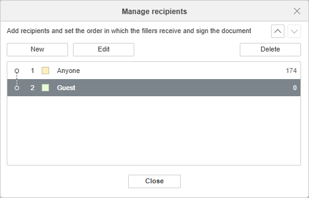
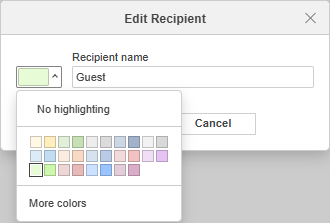

Managing recipient roles
You can create new recipient roles that will determine who can fill in certain form fields.
To manage recipient roles,

- go to the Forms tab in the top toolbar,
- click the Manage Recipient Roles icon,
-
click the New button to create a new recipient role,

- type in the recipient role name and choose its color if necessary. You can also create a custom color by clicking the corresponding menu item,
- click OK to create a new recipient role,
- set the order in which the fillers receive and sign the document using the and buttons,
- use the Edit or Delete buttons to change the recipient roles or delete them,
- click Close to go back to form editing.
To facilitate the process of adding new fields, you can choose the recipient role you want to add a field for beforehand:
- Choose the required recipient role from the drop-down menu in the Insert new fields for section on the top toolbar.
- You can create a new recipient role straightaway by clicking the Add recipient menu item. The list of the recipient roles is the same as the one you manage as per the instructions above.
When saving the form as .pdf file, you can view all recipient roles created for the form.